「剛剛那段音樂好像不錯，可是我不知道怎麼彈。」
如果電腦能直接去聽這段隨手彈奏的錄音，然後告訴你「哪個鍵、什麼時候按下、什麼時候放開、按多大力」。這個問題有個正式的名字叫做自動音樂轉錄（Automatic Music Transcription，AMT）。
這篇想從最底層的開始講起，究竟聲音在電腦裡到底是什麼、怎麼進行處理、鋼琴的聲音為什麼這麼難拆，再看看現在怎麼解決這個問題，以及目前進展如何？又還存在哪些瓶頸？
什麼是自動音樂轉錄
自動音樂轉錄有很多種，而鋼琴是最為人所熟知的樂器之一，所能彈奏的範圍很廣，在鋼琴中如何讓電腦能夠理解如何彈奏呢？實際上每案下一個鍵可以被分成以下幾個子問題：
- 音高：按的是哪個鍵
- 起音（onset）：什麼時候按下
- 放開（offset）：什麼時候放開
- 力度（velocity）：按得多大力
而在鋼琴轉錄中，輸出通常是 MIDI，而不是五線譜。MIDI 記的是「怎麼彈」，也就是第幾秒按下哪個鍵。五線譜記的是「怎麼讀」，有拍子、小節、調號、高低音譜記號等。從 MIDI 再變成樂譜，還要另外處理節拍和聲部，是另一個更難的問題，這篇只會談到 MIDI。
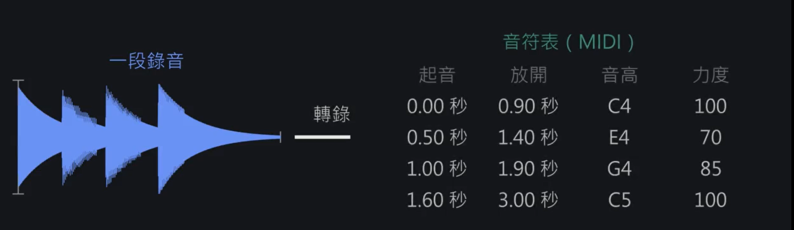
轉錄就是把一段錄音，變成一張音符表。這篇的示範音檔
- 音檔：
demo.wav，16 kHz、單聲道、16-bit PCM、4.0 秒。由make_demo.py合成（基頻加 7 個泛音、指數衰減） - 標準答案：
demo.mid，共 7 個音。- 0.0–1.0 秒是 C3、E3、G3 和弦（MIDI 48、52、55）
- 1.0–3.5 秒依序是 C4、E4、G4、C5 單音（MIDI 60、64、67、72）
- 環境：Python 3.10.5
- 套件：numpy 1.26.4、librosa 0.10.2、pretty_midi 0.2.11、soundfile 0.14.0、matplotlib 3.10.9、mir_eval 0.8.2
- 安裝：
pip install numpy librosa pretty_midi soundfile matplotlib mir_eval - 用法：先跑
python make_demo.py產生這兩個檔，後面每支程式都在同一個資料夾讀它們
🐍 make_demo.py
# 示範音檔：自己做一段「假鋼琴」錄音和它的標準答案 MIDI，後面每一段都用它
import numpy as np # 數值運算
import pretty_midi # 讀寫 MIDI
import soundfile as sf # 存 wav 檔
SR = 16000 # 取樣率：每秒 16000 個數字
# 標準答案：(起音秒, 放開秒, MIDI 音高, 力度)
NOTES = [
(0.0, 1.0, 48, 90), # C3
(0.0, 1.0, 52, 70), # E3（和 C3 同時按：和弦）
(0.0, 1.0, 55, 70), # G3
(1.0, 1.5, 60, 100), # C4（中央 C）
(1.5, 2.0, 64, 90), # E4
(2.0, 2.5, 67, 90), # G4
(2.5, 3.5, 72, 110), # C5
]
def piano_like(f0, dur, vel):
"""用「基頻 + 泛音 + 衰減」合成一個有點像鋼琴的音"""
t = np.arange(int(dur * SR)) / SR # 時間軸（秒）
tone = np.zeros_like(t)
for n in range(1, 9): # 第 1 到第 8 諧波（第 1 個就是基頻）
fn = n * f0 * np.sqrt(1 + 4e-4 * n**2) # 鋼琴的泛音會稍微偏高（不和諧性）
if fn > SR / 2: # 超過取樣率一半會變成假的低頻（混疊，取樣定理）
break
tone += np.sin(2 * np.pi * fn * t) / n # 越高的泛音越小聲
env = np.exp(-3 * t) # 敲下去之後聲音慢慢變小
env[-160:] *= np.linspace(1, 0, 160) # 放開琴鍵：最後 10 ms 快速收掉
return tone * env * (vel / 127)
def main():
total = max(n[1] for n in NOTES) + 0.5 # 總長度多留 0.5 秒
y = np.zeros(int(total * SR))
for on, off, pitch, vel in NOTES:
f0 = pretty_midi.note_number_to_hz(pitch) # MIDI 編號 → 頻率（A4=69=440 Hz）
s = piano_like(f0, off - on, vel)
start = int(on * SR)
y[start:start + len(s)] += s # 疊到同一條音軌上（好幾個音同時響，就是「複音」）
y = 0.9 * y / np.abs(y).max() # 音量正規化，避免爆音
sf.write("demo.wav", y, SR)
pm = pretty_midi.PrettyMIDI() # 把標準答案存成 MIDI
piano = pretty_midi.Instrument(program=0) # program 0 = 鋼琴
for on, off, pitch, vel in NOTES:
piano.notes.append(pretty_midi.Note(velocity=vel, pitch=pitch, start=on, end=off))
pm.instruments.append(piano)
pm.write("demo.mid")
print("已產生 demo.wav 和 demo.mid，長度", round(len(y) / SR, 2), "秒")
if __name__ == "__main__":
main()聲音在電腦裡長什麼樣
波形與取樣
麥克風記錄的是空氣壓力隨時間的連續變化。為了將聲音轉換成電腦能理解的數位格式，系統必須每秒擷取多次數值，這個概念稱為「取樣率」（Sample Rate）。本文後續將統一使用 16 kHz（16,000 次/秒）的標準，這代表每 1 秒的連續聲波，都會被量化為 16,000 個數位資料來處理。
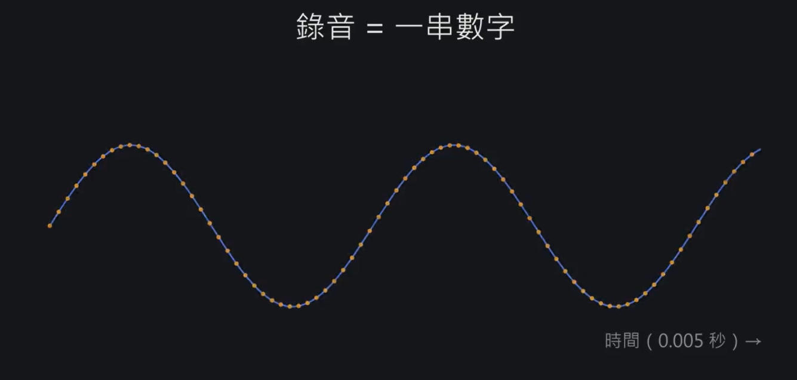
錄音在電腦裡就是一串數字，每個點是一個取樣。取樣率的高低，決定了電腦能還原多高的聲音頻率。根據奈奎斯特香農取樣定理（Nyquist-Shannon sampling theorem），系統能正確還原的最高頻率，極限就是「取樣率的一半」，這個理論臨界值被稱為奈奎斯特頻率（Nyquist frequency）。
以 16 kHz 來說，最高能完美呈現 8 kHz 的聲音。如果原始的物理聲音中含有超過 8 kHz 的高頻成分，並不會在數位化時自動消失，而是會錯誤地「折返」回來，變成虛假的低頻訊號混入音訊中。這種干擾音質的失真現象，在訊號處理工程上稱為混疊（Aliasing）。
🧮 深入一點：為什麼 16 kHz 只能記到 8 kHz
一個波一上一下，至少要記到 2 個點才看得出來。每秒記 $f_s$ 次，所以最高只能記到 $f_s / 2$ 的頻率。
例：$f_s = 16000$，最高是 8,000 Hz。一個 9,000 Hz 的音會被誤記成 $16000 - 9000 = 7000$ Hz，這就是混疊的來源。
🐍 ch1_waveform.py
# 波形與取樣：聲音在電腦裡長什麼樣
import librosa # 音訊處理
import matplotlib.pyplot as plt # 畫圖
import numpy as np
y, sr = librosa.load("demo.wav", sr=16000) # 讀檔，並統一成 16 kHz
print("取樣率:", sr, "Hz") # 每秒幾個數字
print("總共幾個數字:", len(y), "→", len(y) / sr, "秒")
fig, ax = plt.subplots(2, 1, figsize=(10, 5))
t = np.arange(len(y)) / sr # 第幾個數字 → 第幾秒
ax[0].plot(t, y) # 整段波形：看得出音量起伏
ax[0].set_title("Waveform")
z = slice(int(1.1 * sr), int(1.12 * sr)) # 放大 20 ms（中央 C 那段）
ax[1].plot(t[z], y[z], marker=".") # 每個點就是一個取樣
ax[1].set_title("Zoom 20 ms: each dot is one sample")
ax[1].set_xlabel("seconds")
plt.tight_layout()
plt.savefig("ch1_waveform.png")
print("圖存到 ch1_waveform.png")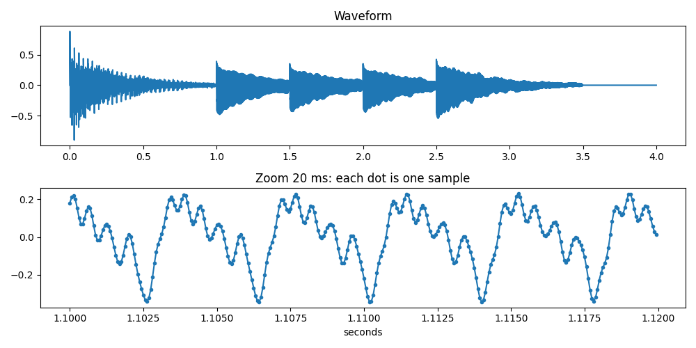
上：整段波形。下：放大 20 毫秒，每個點就是一個取樣。音高和頻率
最基本的聲音單位是「純音」（Pure tone），在數學上它可以完美地用一個正弦波來表示：
$$ x(t) = A \sin(2\pi f t) $$
其中，振幅（$A$）決定了我們聽到的音量大小；而頻率（$f$）則代表聲波每秒鐘振動的次數（單位為赫茲，Hz）。
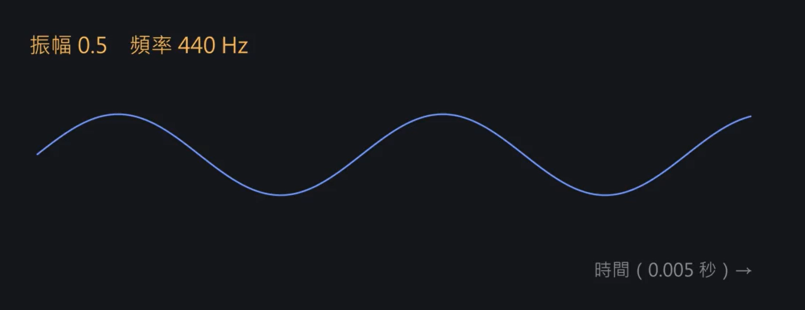
振幅 0.5、頻率 440 Hz。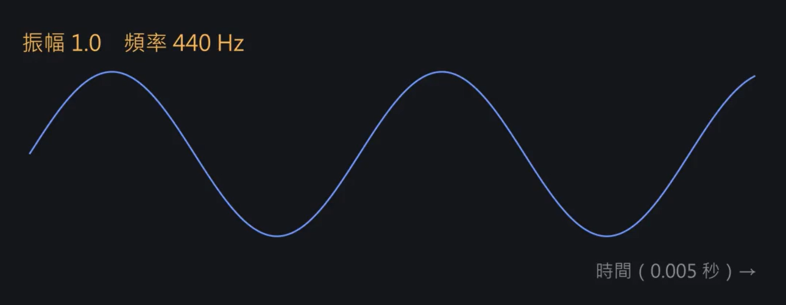
振幅變大，聲音就變大聲。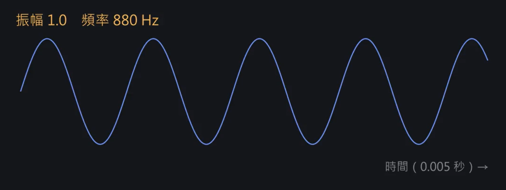
頻率變兩倍，聲音高八度。在日常生活中我們常說的「音高」（Pitch），其實是人類耳朵對聲音高低的一種主觀感知。雖然音高在嚴格的物理學上不完全等同於頻率，但兩者之間有著極高的對應關係：頻率越高，聽起來的音高就越高。但是像鋼琴這類真實的樂器，其發出的聲音並非純音，而是帶有「泛音」的複雜波形。不過我們耳朵所辨識出的那個主要音高，基本上是由頻率最低的那個成分來決定，這個核心頻率在聲學上稱為基頻（Fundamental frequency）。
在現代音樂普遍使用的「十二平均律」系統中，音高與頻率呈現嚴謹的指數關係。以標準音 A4 為例，其基頻被定義為 440 Hz。在這個規則下，每升高一個「八度」，頻率就會剛好翻倍（乘 2）；而每升高一個「半音」，頻率則是乘上 $2^{1/12}$（約等於 1.059）。
為了讓電腦能夠標準化地處理並記錄這些音高，數位音樂領域制定了 MIDI 編號。它為每一個音高分配了一個整數：
- 鋼琴最低音 A0 的 MIDI 編號是 21
- 大家熟知的中央 C（C4）編號是 60
- 標準音 A4 編號是 69
- 鋼琴最高音 C8 編號則是 108
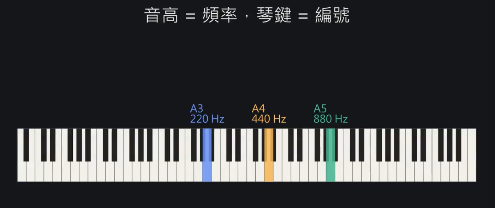
每高一個八度，頻率乘 2。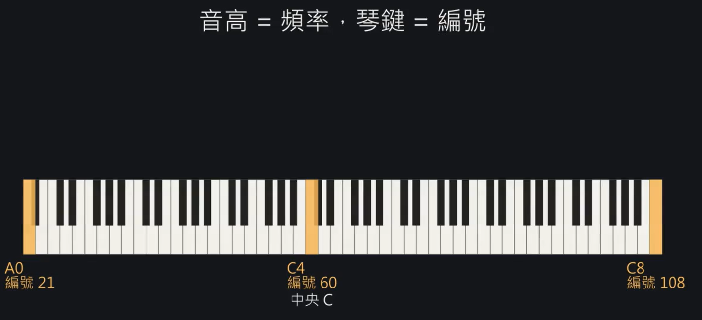
88 個鍵，MIDI 編號從 21 到 108。標準鋼琴總共就是這 88 個鍵。在我們的「自動音樂轉錄」任務中，系統最終要預測並輸出的結果，其實就是這 88 個代表不同琴鍵的 MIDI 編號。
MIDI 編號（$p$）與實際基頻頻率（$f$）之間，可以使用以下公式互相轉換：
$$ f = 440 \times 2^{(p - 69)/12} $$
MIDI 的 69 代表標準音 A4，因此 $(p - 69)$ 的意義就是「這個音符距離 A4 相差了幾個半音」。
- 以中央 C（C4）為例： 它的編號是 60，比 A4 低了 9 個半音（$60 - 69 = -9$），代入公式計算得出 $440 \times 2^{-9/12} \approx 261.6$ Hz。
- 以 G4 為例： 它的編號是 67，比 A4 低了 2 個半音（$67 - 69 = -2$），代入公式得出 $440 \times 2^{-2/12} \approx 392.0$ Hz。
把聲音變成圖片：頻譜圖
但是光看原本密密麻麻的連續波形，幾乎無法直接分辨出音高。為了解決這個問題，我們需要將波形轉換為「頻譜圖」（Spectrogram）。
頻譜圖是一張二維圖表，其中橫軸是時間、縱軸是頻率，而畫面的亮度則代表該頻率的能量強弱。經過這樣的轉換，聲音的結構變得更加清楚，當樂器發出一個音符時，在頻譜圖上就會精準地化為一組平行的水平亮線。
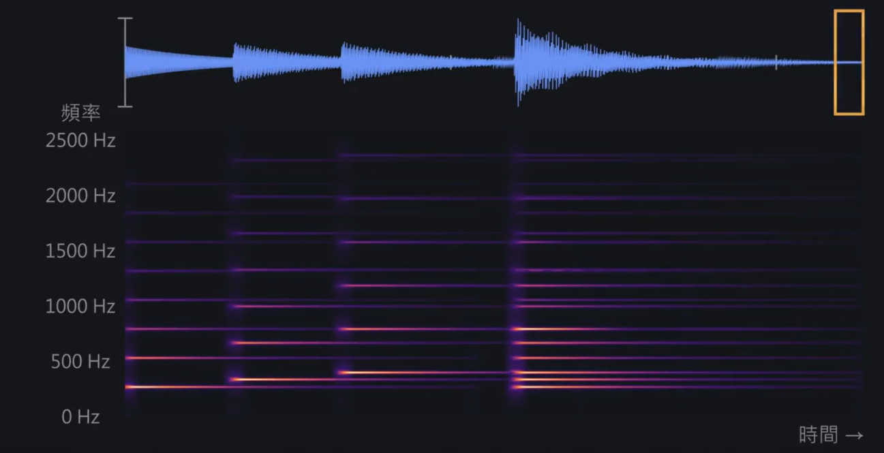
波形轉成頻譜圖之後，每個音變成一組水平亮線。STFT - 一小段一小段地看頻率
為了畫出前面提到的頻譜圖，電腦必須知道每個時間點分別有哪些頻率。具體作法是將整段聲音切成許多重疊的小段，然後再進行逐段分析，這個方法被稱為短時距傅立葉轉換（Short-Time Fourier Transform, STFT）。
傅立葉轉換的概念是：「任何複雜的聲音，都能拆解成許多不同頻率的正弦波相加」。電腦會拿各種頻率的「標準波形」去跟這小段聲音做比對。若長得越像，則就代表那個頻率的分數（能量）就越高。
在實際切片處理時，我們需要決定三件事：
- 每段切多長（Window Size）： 常見的長度是 2048 個取樣點。還記得我們前面設定的 16 kHz 取樣率（1 秒 16,000 次）嗎？因此 2048 個取樣點大約相當於 128 毫秒的長度（2048 ÷ 16000=0.128）。
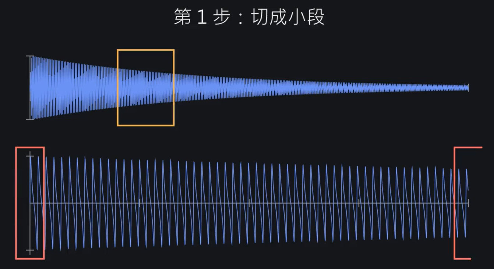
第 1 步：切成小段。直接剪下來，兩端會突然斷掉。 - 切口怎麼處理（Window Function）： 如果直接將波形剪斷，切口處就會產生不自然的斷層，這會使電腦誤以為聲音裡多了很多實際上不存在的頻率。為了解決這個問題，我們會把每一段聲音乘上一個兩端漸弱的形狀，就像音樂的淡入與淡出。工程上最常用的漸弱形狀叫做 Hann 視窗。
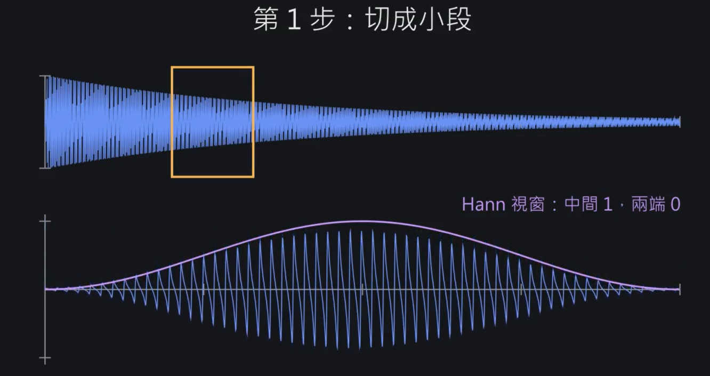
第 2 步：乘上 Hann 視窗，中間是 1、兩端是 0。 - 多久切一次（Hop Size）： 為了避免遺漏資訊，每次只往前移 160 個取樣點（約 10 毫秒）就會切下一段，因此相鄰的兩段會有很大部分的重疊。這樣所切出來的每一小塊稱為一幀（Frame），也就是指，1 秒鐘的聲音會被切成 100 格（16,000 ÷ 160 = 100）。
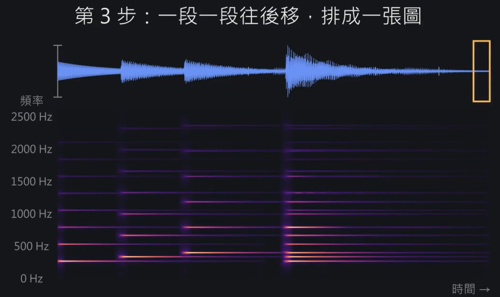
第 3 步：一段一段往後移，排成一張圖。
算一下會發現，實際上每一格的聲音會被轉換成 1,025 個頻率點，每個點的間距大約是 7.8 Hz（16,000 ÷ 2,048=7.8125）。
🧮 深入一點：Hann 視窗長什麼樣子
一段有 $N$ 個取樣，第 $n$ 個取樣要乘上 $w[n] = 0.5 - 0.5\cos(2\pi n / N)$。$n = 0$ 時 cos 是 1，$w = 0$。走到正中間 $n = N/2$ 時 cos 是 −1，$w = 1$。所以它從 0 慢慢升到 1，再慢慢降回 0，像一個小山丘。
例：$N = 2048$ 時，第 0 個取樣乘 0，第 512 個乘 0.5，第 1024 個乘 1，第 1536 個又回到 0.5。
兩端都壓到 0，切口就不會突然斷掉，也就不會冒出假的頻率。代價是兩端的聲音被削弱，所以相鄰的段要重疊，讓每個取樣都有機會落在某一段的中間。
🧮 深入一點：為什麼頻率越細，時間就越模糊
一段有 $N$ 個取樣，能分辨的頻率間隔是 $\Delta f = f_s / N$，這一段的長度是 $N / f_s$ 秒。
例：$N = 2048$ 時，$\Delta f = 16000 / 2048 \approx 7.8$ Hz，一段長 0.128 秒。想分到 3.9 Hz 就要 $N = 4096$，一段變成 0.256 秒，這段時間裡發生的事就分不出先後了。
Mel 與 log - 讓圖比較像耳朵聽到的
STFT 的頻率點是等距的，但音高是等比的。所以低音區好幾個鍵擠在同一個頻率點（A0 和 A#0 只差約 1.6 Hz，比 7.8 Hz 還小），高音區一個鍵卻佔了好幾十點。
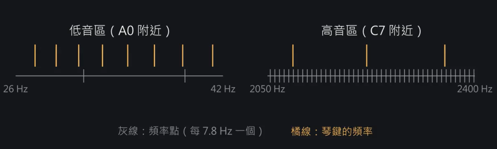
灰線是 STFT 的頻率點（每 7.8 Hz 一個），橘線是琴鍵的頻率。人類的聽覺其實很不客觀。我們對低音極度敏感，頻率差一點點就聽得出來，但對高音卻超級遲鈍，10k Hz 還是 15k Hz 聽起來幾乎一模一樣。
做法是套用梅爾刻度（Mel Scale），將 STFT 原本死板的 1,025 個頻率點，按照「低頻細、高頻粗」的原則，重新合併壓縮成 229 個頻帶，這就非常貼近人耳的真實感受了。
又因為人耳對「音量」的感受也不是線性的，所以還要再對這些能量數值取對數（Log），把數值轉換成我們熟悉的分貝（dB）。經過這兩步，就是語音辨識領域最常用的 Log-Mel 頻譜圖。
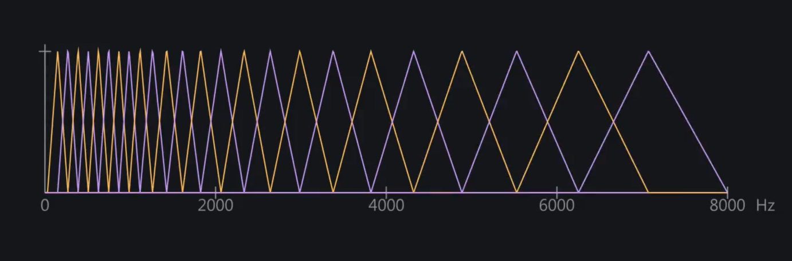
Mel 濾波器：低頻切得細，高頻切得粗。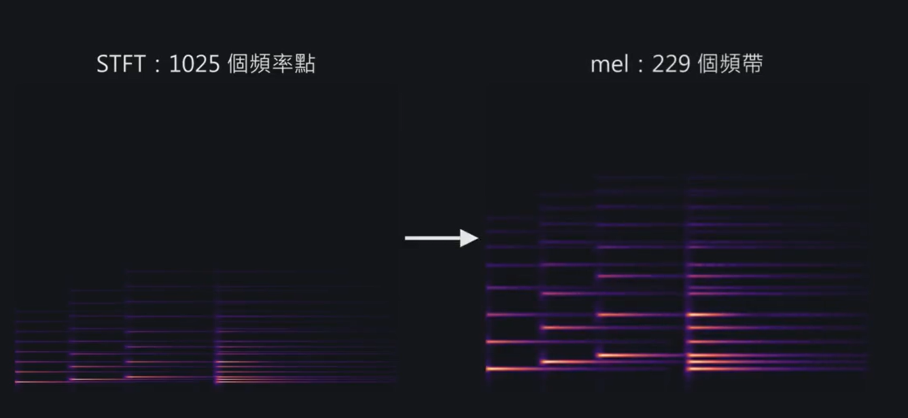
STFT 的 1,025 個頻率點，合併成 229 個 Mel 頻帶。鋼琴從極弱到極強，能量差了好幾個數量級，取 log 之後大聲和小聲的差距不會太懸殊，模型比較好學。換算時要分清楚是能量（功率）還是振幅：功率乘 10 倍是 +10 dB，振幅乘 10 倍則是 +20 dB。
🧮 深入一點：分貝為什麼有時乘 10、有時乘 20
分貝的定義是 $10 \log_{10}(P / P_0)$，$P$ 是功率（能量）。
功率和振幅的平方成正比，$P \propto A^2$，所以用振幅算會變成 $10 \log_{10} A^2 = 20 \log_{10} A$。
例：振幅變 10 倍，功率就變 100 倍，$10 \log_{10} 100 = 20$ dB。
做完這兩步得到的就是 Log-Mel 頻譜圖：一張「格數 × 229」的表，會發現被分得更開，這樣就不會重疊太多過於複雜無法進行處理。
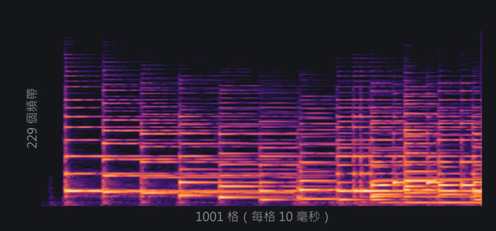
Log-Mel 頻譜圖：縱軸 229 個頻帶，橫軸每格 10 毫秒。CQT - 一格一個半音，更懂音樂的頻譜圖
前面提到，人耳聽音高是「等比」的，升一個八度頻率剛好乘 2。但傳統的 STFT 算出來的頻率卻是「等差」的，這在處理音樂時常常會有點卡卡的。那有沒有辦法，直接讓頻譜圖的橫軸變成跟我們耳朵一樣的「等比」刻度呢？常數 Q 轉換（Constant-Q Transform，CQT）就是在做這件事情。
概念是直接讓每個八度固定切成相同的格數。
最常見的做法，就是設定「一格等於一個半音」。把鋼琴最低的那個音 A0（27.5 Hz）當作起點，接下來第 $k$ 格的頻率就是 $27.5 \times 2^{k/12}$ Hz。會發現這跟 MIDI 音高的邏輯一模一樣，所以我們只要在 CQT 裡面切出 88 格，就能完美對上鋼琴的 88 個琴鍵。
🧮 深入一點：為什麼換音高，泛音的樣子不變
第 $n$ 個泛音的頻率是 $n f_0$。取對數：$\log(n f_0) = \log f_0 + \log n$。
CQT 的頻率軸就是對數軸。換音高只改變 $\log f_0$，每個泛音都加上同一個數，所以整排一起平移，間隔不變。
例：C4 的泛音排列跟 C3 一模一樣，只是整排往上移了 12 格。
假設我們拿一段 4 秒鐘 的錄音來跑程式：
首先，時間軸（橫軸）長度都一樣。我們前面設定 1 秒切 100 格，4 秒就會是 400 格，而程式在實際切割時，通常會在結尾多算 1 格來收尾，所以時間軸的長度都會是 401 格。
但頻率軸（縱軸）會不一樣！這三種方法的最終產出結果會長這樣：
- STFT（1,025 × 401）：最原始的物理呈現
保留了最原始的線性頻率，資料量最大，整整有 1,025 個頻率點。 - Log-Mel（229 × 401）：人類聽覺特化
經過人耳聽覺模型壓縮後，頻率維度大幅縮減到了 229 個。 - CQT（88 × 401）：音樂樂理特化
一格對應一個半音，高度剛剛好就是 88，完美對齊鋼琴的 88 個琴鍵。
🐍 ch2_spectrogram.py
# 頻譜圖：把聲音變成圖片（STFT、Mel、CQT）
import librosa
import librosa.display
import matplotlib.pyplot as plt
import numpy as np
y, sr = librosa.load("demo.wav", sr=16000)
# STFT：每次取 2048 點（128 ms），每 160 點（10 ms）往前移一次
S = np.abs(librosa.stft(y, n_fft=2048, hop_length=160, window="hann"))
print("STFT 形狀（頻率點 × 格數）:", S.shape) # 1025 個頻率點
print("每個頻率點相隔:", sr / 2048, "Hz") # 約 7.8 Hz
# Mel：把 1025 點合併成 229 個「低頻細、高頻粗」的頻帶，再取 log（dB）
M = librosa.feature.melspectrogram(y=y, sr=sr, n_fft=2048, hop_length=160,
n_mels=229, fmin=30, fmax=8000)
M_db = librosa.power_to_db(M, ref=np.max) # 能量（功率）→ 分貝
print("Mel 形狀（頻帶 × 格數）:", M_db.shape)
# CQT：每個半音一格，從鋼琴最低音 A0 開始共 88 格 → 剛好對上 88 個琴鍵
C = np.abs(librosa.cqt(y, sr=sr, hop_length=160,
fmin=librosa.note_to_hz("A0"), n_bins=88, bins_per_octave=12))
C_db = librosa.amplitude_to_db(C, ref=np.max) # 振幅 → 分貝
print("CQT 形狀（琴鍵 × 格數）:", C_db.shape)
fig, ax = plt.subplots(3, 1, figsize=(10, 10))
librosa.display.specshow(librosa.amplitude_to_db(S, ref=np.max), sr=sr, hop_length=160,
x_axis="time", y_axis="linear", ax=ax[0])
ax[0].set_title("STFT (linear frequency)")
librosa.display.specshow(M_db, sr=sr, hop_length=160, x_axis="time", y_axis="mel",
fmin=30, fmax=8000, ax=ax[1])
ax[1].set_title("Log-Mel (229 bands)")
librosa.display.specshow(C_db, sr=sr, hop_length=160, x_axis="time", y_axis="cqt_note",
fmin=librosa.note_to_hz("A0"), bins_per_octave=12, ax=ax[2])
ax[2].set_title("CQT (one bin per semitone, 88 keys)")
plt.tight_layout()
plt.savefig("ch2_spectrogram.png")
print("圖存到 ch2_spectrogram.png")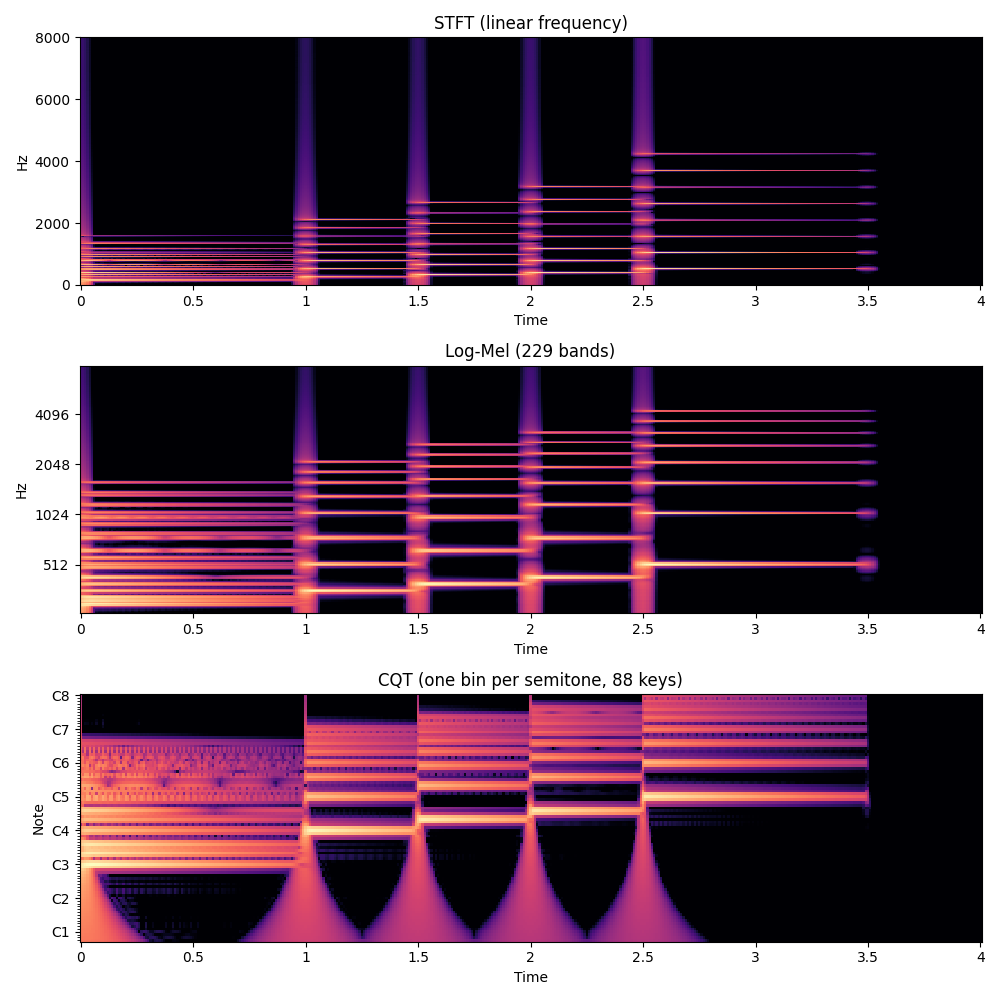
同一段聲音的三種圖：STFT、Log-Mel、CQT。鋼琴的聲音有什麼特別
如果你以為「按一個琴鍵 ＝ 發出一個頻率」，那自動採譜（音樂轉錄）就太簡單了。鋼琴在聲音頻譜上，有幾個麻煩的物理特性。
泛音列 - 你以為是一個音，其實是一整排音
當鋼琴的一根弦被敲擊而振動時，它不會只發出我們耳朵認定的那個「音高」（基頻 $f$）。弦的其他部分也會跟著產生 $2f$、$3f$、$4f$……的振動，這就是所謂的泛音列（Harmonics）。
也就是說，一個音符在頻譜圖上，其實是一整排等距的水平亮線。舉例來說，當你彈下低音的 C3（130.8 Hz）時，同時發出聲音的不只有 C3，還包含了 261.6 Hz（C4）、392 Hz（G4）、523 Hz（C5）的能量。
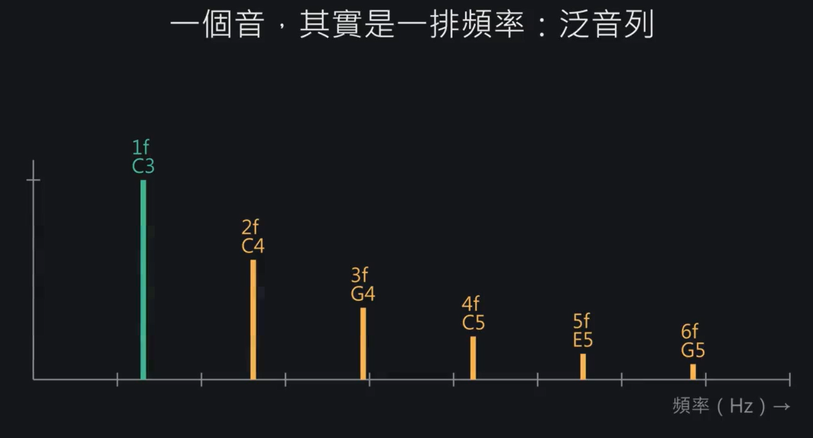
彈一個 C3，頻譜上其實是一整排泛音。這是轉錄能做到的依據，也是最常見錯誤的來源，電腦很容易以為 C4 也被按了，這就是八度錯誤。鋼琴還有一個特別的地方，弦有硬度，所以泛音會越來越偏高，不是剛好的整數倍，這叫不和諧性（inharmonicity）。
⚠️ 踩坑警告：八度錯誤（Octave Error）
這正是轉錄系統最容易犯的錯。當 AI 在頻譜上看到 C4 有能量時，它很容易誤以為「有人按下了 C4 鍵」，但其實那根本只是 C3 產生的泛音！
🧮 深入一點：鋼琴的泛音為什麼會偏高？
理想中柔軟的弦，第 $n$ 個泛音剛好是 $n f_0$。但真實的鋼琴弦具有剛性（Stiffness），這會產生一股額外的回彈力，導致高階泛音的頻率偏高一點點：
$$ f_n = n f_0 \sqrt{1 + B n^2} $$
其中的 $B$ 是一個非常小的常數（Inharmonicity coefficient）。
讓我們寫一段小程式，直接從真實的錄音裡驗證這件事：
🐍 ch3_harmonics.py
# 泛音：鋼琴的一個音 = 基頻 + 一整排泛音
import librosa
import matplotlib.pyplot as plt
import numpy as np
y, sr = librosa.load("demo.wav", sr=16000)
S = np.abs(librosa.stft(y, n_fft=4096, hop_length=160)) # 視窗拉長，頻率看得更細
freqs = librosa.fft_frequencies(sr=sr, n_fft=4096) # 每一列對應的頻率（Hz）
frame = librosa.time_to_frames(1.2, sr=sr, hop_length=160) # 第 1.2 秒：只有中央 C 在響
spec = S[:, frame]
f0 = librosa.note_to_hz("C4") # 中央 C ≈ 261.6 Hz
print("C4 基頻:", round(f0, 1), "Hz")
for n in range(1, 6): # 找第 1~5 諧波（第 1 個就是基頻）附近的最大值
band = (freqs > n * f0 * 0.97) & (freqs < n * f0 * 1.03)
peak = freqs[band][np.argmax(spec[band])]
print(f"第 {n} 諧波：理論 {n * f0:.1f} Hz，實際峰值 {peak:.1f} Hz，"
f"聽起來像 {librosa.hz_to_note(peak)}") # 2f=C5、3f≈G5 → 八度錯誤的來源
plt.figure(figsize=(10, 4))
plt.plot(freqs, librosa.amplitude_to_db(spec, ref=np.max))
for n in range(1, 6):
plt.axvline(n * f0, color="r", ls="--", alpha=0.5) # 紅線：理論上的泛音位置
plt.xlim(0, 2000)
plt.xlabel("Hz")
plt.ylabel("dB")
plt.title("Middle C spectrum: evenly spaced harmonics")
plt.tight_layout()
plt.savefig("ch3_harmonics.png")
print("圖存到 ch3_harmonics.png")如果你跑這段程式，會印出前 5 個泛音的實際峰值：261.7、523.4、785.2、1050.8、1316.4 Hz。會發現前三個幾乎就是完美的整數倍，但第 4、5 個已經比理論上的 $4f_0$、$5f_0$ 高出了 4～8 Hz，這正好印證了上面提到的「不和諧性」。
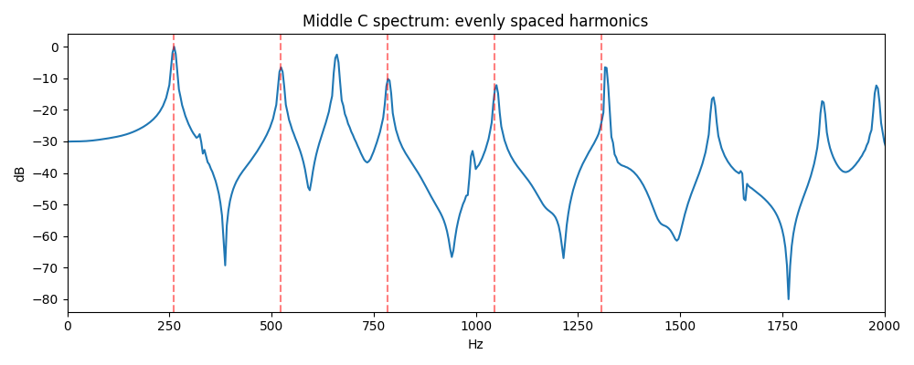
中央 C 的頻譜，紅色虛線是理論上的泛音位置。一個鋼琴音的生命週期
除了看頻率，我們把視角切換到時間軸。鋼琴本質上是「擊弦樂器」，從琴槌敲擊下去的那一刻，到手離開琴鍵，聲音會經歷一個明顯的生命週期（Envelope）。
我們用合成音檔的方法彈一個 C4，按住 1.2 秒再放開，畫出它的音量變化圖：
🐍 ch3_envelope.py
# 一個音的生命週期：用示範音檔的合成方法彈一個 C4，畫出它的音量隨時間怎麼變
import librosa
import matplotlib.pyplot as plt
import numpy as np
from make_demo import SR, piano_like # 沿用 make_demo.py 的「假鋼琴」
HOLD = 1.2 # 按住 1.2 秒後放開
note = piano_like(librosa.note_to_hz("C4"), HOLD, 100)
y = np.concatenate([np.zeros(int(0.2 * SR)), note, np.zeros(int(0.5 * SR))]) # 前後留一點安靜
rms = librosa.feature.rms(y=y, frame_length=512, hop_length=160)[0] # 每 10 ms 算一次音量
db = librosa.amplitude_to_db(rms, ref=np.max) # 換成分貝
t = librosa.frames_to_time(np.arange(len(db)), sr=SR, hop_length=160)
plt.figure(figsize=(10, 4))
plt.plot(t, db)
plt.ylim(-60, 5)
on, off = 0.2, 0.2 + HOLD
plt.axvline(on, color="g", ls="--")
plt.axvline(off, color="r", ls="--")
plt.annotate("onset: hammer hits the string", (on, 0), (on + 0.08, 2), color="g")
plt.annotate("decay: slowly gets quieter", (0.8, -12), (0.55, -8))
plt.annotate("offset: key released, damper stops the string", (off, -30), (off - 0.75, -45), color="r",
arrowprops=dict(arrowstyle="->", color="r"))
plt.xlabel("seconds")
plt.ylabel("loudness (dB)")
plt.title("Life of one piano note (C4)")
plt.tight_layout()
plt.savefig("ch3_envelope.png")
print("圖存到 ch3_envelope.png")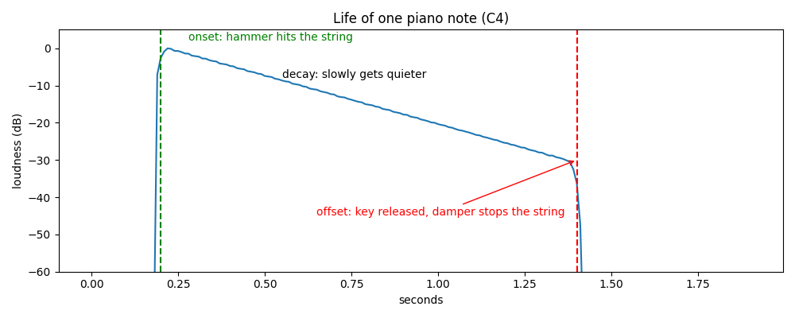
一個音的生命週期：綠線是起音，紅線是放開。從圖上我們能觀察到三個關鍵特徵：
- 起音（Onset）極度明顯： 琴槌撞擊弦的瞬間，會有一個能量爆發的尖銳點。這個瞬間最容易被程式偵測到，是決定音符什麼時候開始的最重要依據。此外，按得越用力，起音就越亮、越大聲（在 MIDI 裡稱為 Velocity，數值介於 0–127）。
- 衰減（Decay）是線性的： 圖中那段斜直線就是衰減期。我們的 demo 程式是用 $e^{-3t}$ 來讓聲音隨時間慢慢變小；當你把它轉換成對數的分貝（dB）時，數學公式會變成 $20 \log_{10} e^{-3t} \approx -26t$。也就是說，聲音每過 1 秒就會乖乖下降 26 dB，因此在分貝圖上呈現一條完美的斜直線。
- 釋音（Offset）非常模糊： 當手指放開琴鍵，制音器（Damper）壓住弦讓聲音停止。但在圖表上，因為聲音本來就已經在衰減了，放開琴鍵只是讓它「消失得更快一點」，比起銳利的起音，結束的時間點通常很難抓得很準。
自動採譜的「三大魔王」
除此之外，還有三件事讓鋼琴特別難轉：
- 延音踏板：踩著踏板時，手放開了聲音還會繼續響，從聲音上看不出鍵是什麼時候放開的
- 同音連打：同一個鍵快速按兩次，第二下的聲音疊在第一下的尾巴上，很難分辨是一個音還是兩個
- 複音（polyphony）：鋼琴常常好幾個音同時響，每個音的泛音全部疊在同一張頻譜上，要從裡面拆出是哪幾個鍵
用 NMF 拆頻譜
在深度學習（Deep Learning）稱霸天下之前，前輩們是怎麼解開「頻譜疊加」這個問題的？
當時的研究者直接利用了聲音的物理規律：既然一個音就是「固定的一排泛音」，那整張頻譜，不就等於是很多個單音的頻譜「疊加」起來的嗎？基於這個直覺，他們用了一個數學工具：非負矩陣分解（Non-negative Matrix Factorization，簡稱 NMF）。
NMF 的核心概念超級簡單，它要把我們算出來的龐大頻譜矩陣 $V$
$$ V \approx W \times H $$
- $W$ 矩陣（音色模板）： 每一欄代表一個成分的頻譜長相。
- $H$ 矩陣（時間強度）： 每一列代表該成分在每個時間點的音量大小。
這裡有一個最重要的靈魂設定：「非負」（Non-negative）。因為在真實世界裡，聲音的能量只能相加疊加，絕對不可能出現「負的聲音」來互相抵消。正因為這個物理限制，NMF 拆出來的成分，往往能奇蹟似地剛好對應到一個個獨立的音符，而且完全不需要餵給它任何訓練資料！
🧮 深入一點：NMF 怎麼把頻譜拆開
想找兩張表 $W$、$H$，讓 $W \times H$ 跟原本的頻譜 $V$ 越接近越好，而且表裡的數字都不能是負的。
「越接近」是把每一格的差距平方後加起來：$\sum (V - WH)^2$，越小越好。
電腦先隨便猜一組 $W$、$H$，再一點一點調整，直到差距不再變小。
我們直接拿一段包含和弦與單音的示範音檔（demo.wav）來跑跑看。我們預期抓出 7 個成分（n_components=7）
🐍 ch4_nmf.py
# NMF：把頻譜拆成「音色模板 × 什麼時候在響」
import librosa
import matplotlib.pyplot as plt
import numpy as np
y, sr = librosa.load("demo.wav", sr=16000)
C = np.abs(librosa.cqt(y, sr=sr, hop_length=160,
fmin=librosa.note_to_hz("A0"), n_bins=88)) # 88 鍵的 CQT
V = np.log1p(C) # 壓縮大小聲差距（數值仍 ≥ 0）
# V ≈ W × H：W 是 7 個「音長什麼樣」，H 是它們「每一格多大聲」
W, H = librosa.decompose.decompose(V, n_components=7, sort=True) # 背後是 sklearn 的 NMF；一個成分不一定剛好是一個音
print("V:", V.shape, "≈ W:", W.shape, "× H:", H.shape)
for k in range(W.shape[1]): # 每個成分最亮的那一格 → 對應哪個鍵
key = int(np.argmax(W[:, k]))
active = np.where(H[k] > 0.5 * H[k].max())[0] # 這個成分主要在哪段時間響
print(f"成分 {k}: 最強在 {librosa.midi_to_note(21 + key)}，"
f"大約在 {active[0] * 160 / sr:.2f}–{active[-1] * 160 / sr:.2f} 秒")
fig, ax = plt.subplots(1, 2, figsize=(12, 4))
ax[0].imshow(W, aspect="auto", origin="lower")
ax[0].set_title("W: spectral template per component")
ax[0].set_ylabel("key (0 = A0)")
ax[1].imshow(H, aspect="auto", origin="lower")
ax[1].set_title("H: activation over time")
ax[1].set_xlabel("frame (10 ms)")
plt.tight_layout()
plt.savefig("ch4_nmf.png")
print("圖存到 ch4_nmf.png")後面四個單音 C4、E4、G4、C5 各自拆成了一個成分，時間也對。但開頭一起按的 C3-E3-G3 和弦被併成同一個成分，因為這三個音永遠同時出現，NMF 沒有理由把它們分開。另外還多出一個只在起音瞬間出現的成分。這也就是 NMF 的限制：一個成分不一定等於一個音，拆出來的東西還要另外對到音高，曲子一複雜就容易混在一起。
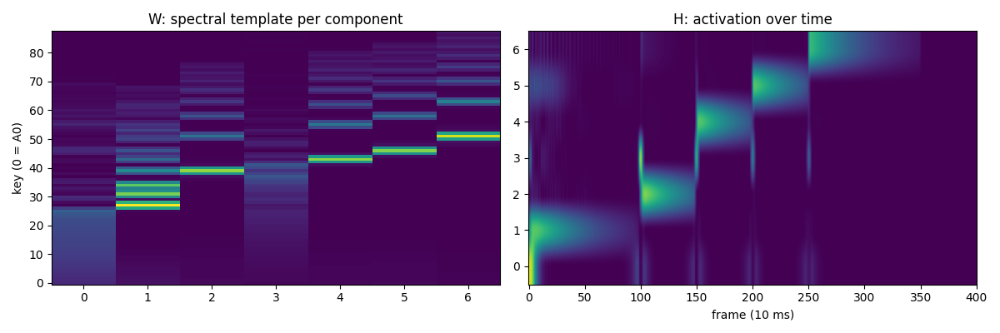
左：W，每個成分的頻譜模板。右：H，每個成分在每一格的強度。深度學習怎麼看這個問題
Piano roll：每 10 毫秒 × 88 個鍵的是非題
音符有兩種表示法：
- 音符表：每行一個音，記下起音、放開、音高、力度。MIDI 檔存的就是這個，也是轉錄最後要輸出的東西
- Piano roll：一張「88 鍵 × 格數」的表，某一格某個鍵在響就填 1，否則填 0，就像自動鋼琴的打孔紙卷
為什麼要兩種？因為神經網路最擅長回答的是「這一格、這個鍵，有沒有在響」這種是非題。所以訓練時把音符表轉成 piano roll 當答案。模型對每一格、每個鍵猜一個 0 到 1 的機率，訓練時拿它跟答案比，猜錯就修正。實際拿來用的時候，機率 $p > 0.5$ 就當成在響，再把 piano roll 轉回音符表，這一步叫解碼。
🧮 深入一點：模型怎麼知道自己猜得好不好
模型對每一格、每個鍵猜一個 0 到 1 的機率 $p$。如果答案是「有在響」，就扣 $-\ln p$ 分。
例：猜 $p = 0.9$，扣 $-\ln 0.9 \approx 0.1$ 分。猜 $p = 0.1$，扣 $-\ln 0.1 \approx 2.3$ 分。越有把握地猜錯，扣得越多。訓練就是讓總扣分越來越少。
🐍 ch5_pianoroll.py
# Piano roll：音符表 ↔ piano roll，神經網路看的答案長什麼樣
import matplotlib.pyplot as plt
import numpy as np
import pretty_midi
FPS = 100 # 每秒 100 格（每格 10 ms）
pm = pretty_midi.PrettyMIDI("demo.mid")
print("音符表（起音, 放開, 音高, 力度）:")
for n in pm.instruments[0].notes:
print(f" {n.start:.2f} {n.end:.2f} {n.pitch} {n.velocity}")
roll = pm.get_piano_roll(fs=FPS)[21:109] # 128 個 MIDI 音高只留鋼琴的 88 鍵
roll = (roll > 0).astype(int) # 有在響 = 1，沒響 = 0
print("piano roll 形狀（88 鍵 × 格數）:", roll.shape)
def decode(roll, fps=FPS):
"""把 piano roll 轉回音符表：一段連續的 1 = 一個音"""
notes = []
for key in range(roll.shape[0]):
row = np.concatenate([[0], roll[key], [0]]) # 頭尾補 0，方便找邊界
diff = np.diff(row)
starts = np.where(diff == 1)[0] # 0→1：起音
ends = np.where(diff == -1)[0] # 1→0：放開
for s, e in zip(starts, ends):
notes.append((s / fps, e / fps, key + 21))
return sorted(notes)
print("從 piano roll 解碼回來（起音, 放開, 音高）:")
for on, off, pitch in decode(roll):
print(f" {on:.2f} {off:.2f} {pitch}")
plt.figure(figsize=(10, 4))
plt.imshow(roll, aspect="auto", origin="lower", cmap="gray_r")
plt.xlabel("frame (10 ms)")
plt.ylabel("key (0 = A0)")
plt.title("Piano roll")
plt.tight_layout()
plt.savefig("ch5_pianoroll.png")
print("圖存到 ch5_pianoroll.png")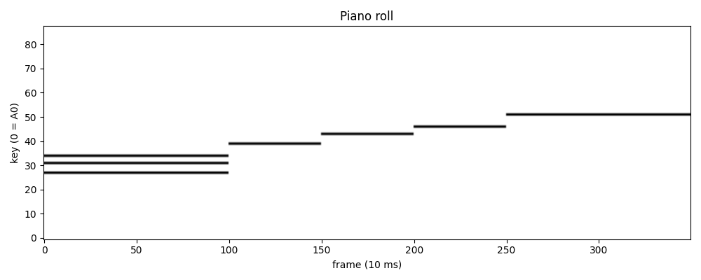
Piano roll：左下是開頭的和弦，右邊是四個往上走的單音。7 個音從音符表變成 88 × 350 的 piano roll，再解碼回來，7 個音一個不差。這裡因為答案本身就是乾淨的 0/1，所以解碼很簡單。真正的模型輸出的是機率，衰減到很小聲的格子有時判 0、有時判 1，一個音就會被切成好幾段。
關鍵的里程碑
以下列出近幾年的幾個關鍵突破。讓我們順著時間軸，來看看是怎麼一步步破解鋼琴轉錄任務的：
1. Sigtia et al. (2016)：聲學與音樂語言模型的深度整合
- 研究亮點： 確立了「聽覺特徵 + 上下文邏輯」的混合預測架構。
- 專業摘要： 本研究是早期將端到端深度學習應用於多音（Polyphonic）鋼琴轉錄的先驅。作者將處理音訊的神經聲學模型（Acoustic Model, 結合 CNN/RNN）與處理音符序列的音樂語言模型（Music Language Model, 基於 RNN）進行整合。聲學模型負責從頻譜中提取每一幀的音高特徵，而語言模型則扮演「先驗機率」的角色，根據過去出現的音符邏輯，預測接下來最可能發生的和弦或音符。此架構有效降低了單純依賴聲學特徵時所產生的泛音誤判與和聲干擾。
2. Onsets and Frames (2018)：基於物理特性的雙分支卷積神經網路
- 研究亮點： 引入「起音制約（Onset-conditioned）」機制，解決音符連續性判斷的難題。
- 專業摘要： 針對鋼琴音訊衰減平緩、易受泛音干擾的物理痛點，Hawthorne 等人提出了一種雙分支（Dual-head）架構。模型並行訓練兩個網路：一個專門偵測高能量的起音瞬間（Onsets），另一個判斷音符是否持續發聲（Frames）。系統在輸出端實施了嚴格的邏輯閘控機制——「若無起音，則不允許觸發新的音符」。這種將樂器物理特性化為網路歸納偏置（Inductive Bias）的設計，大幅減少了八度錯誤與斷音問題，是現代實用化鋼琴轉錄的分水嶺。
3. MAESTRO Dataset (2019)：解決資料瓶頸的超大規模基準測試庫
- 研究亮點： 提供微秒級對齊的「音訊—MIDI」真實演奏標註資料。
- 專業摘要： 深度學習的效能高度依賴資料質量。Google 團隊利用 Yamaha Disklavier 系統（可精確記錄琴鍵與踏板物理動作的自動演奏鋼琴），錄製了超過 200 小時的國際鋼琴大賽真實演奏。MAESTRO 解決了過去人工標註不準確、合成音訊缺乏真實感的問題，提供了微秒級（Sub-millisecond）完美對齊的配對資料。它從根本上解除了 AMT 領域的資料荒，成為後續所有先進模型必備的標準 Benchmark。
4. Kong et al. (2021)：突破時間網格限制的高解析度轉錄
- 研究亮點： 將起音與釋音預測從「分類問題」轉化為「回歸問題」。
- 專業摘要： 傳統的 STFT 幀級預測會受限於時間網格的解析度（例如 10ms 或 32ms 一幀），導致轉錄出的 MIDI 節奏生硬。本研究創新地在網路架構中加入時間偏移量（Time Offset）的回歸（Regression）預測，讓模型不僅判斷「這一幀有無起音」，更進一步計算「真實起音距離這一幀中心差了幾毫秒」。此舉讓轉錄的時間精度達到了超越頻譜解析度的連續物理時間級別；同時，該模型也加入了對延音踏板（Sustain Pedal）的高精度偵測，大幅提升了樂譜還原度。
5. Seq2seq Transformer 與 MT3 (2021–2022)：將轉錄重塑為語言翻譯任務
- 研究亮點： 捨棄特定樂器規則，利用 Transformer 進行序列到序列（Seq2seq）的自回歸生成。
- 專業摘要： 受益於自然語言處理（NLP）的發展，研究人員放棄了為鋼琴量身打造的複雜分類與後處理規則，直接採用 Transformer 架構。模型將輸入的聲學頻譜視為「來源語言」，將輸出的 MIDI 事件（如 Note-On, Note-Off, Velocity, Time-Shift）視為「目標語言的詞彙（Tokens）」。這種 Seq2seq 範式能利用自注意力機制（Self-Attention）捕捉極長距離的音樂語義依賴。隨後的 MT3（Multi-Task Multitrack Music Transcription）更將此架構擴展至多樂器同時轉錄，證明了統一生成式架構在音訊領域的泛化能力。
6. hFT-Transformer 與 Transkun v2 (2023–2024)：頻時聯合注意力機制的最前沿
- 研究亮點： 針對音樂頻譜特製的注意力機制，逼近完美的特徵提取極限。
- 專業摘要： 作為目前在 MAESTRO 資料集上達到 SOTA（State-of-the-Art）的代表模型，它們進一步優化了 Transformer 處理音訊頻譜的方式。傳統 Transformer 將頻譜粗暴地切塊，忽略了音樂的諧波（Harmonic）與對數頻率結構。hFT-Transformer 等模型引入了分層頻時注意力機制（Hierarchical Frequency-Time Attention），在局部先捕捉頻率軸上的泛音結構，再於全局聚合時間軸上的動態變化。這些底層機制的改進，將起音 F1 分數推向 >98% 的極限，並在最困難的釋音（Offset）與力度（Velocity）預測上取得了決定性的突破。
轉得好不好，怎麼打分數
評估的第一步，是把模型寫出來的音跟「標準答案（Reference）」進行一一配對：
- TP (True Positive)： 配對成功的音。
- FP (False Positive)： 模型多寫出來的音，但在標準答案裡根本沒有。
- FN (False Negative)： 標準答案裡有這個音，但模型沒抓到。
有了這三個數字，我們就能算出三個最重要的分數：
- Precision（精確率）：模型寫出來的音裡，有多少是真的？
如果模型有「多寫假音（FP）」的壞習慣，這個分數就會被拉低。
公式：$P = \frac{TP}{TP + FP}$ - Recall（召回率）：真正的音裡面，有多少被模型找到了？
如果模型太保守，常常「漏音（FN）」，這個分數就會變低。
公式：$R = \frac{TP}{TP + FN}$ - F1 Score：精確率與召回率的調和平均數
公式：$F_1 = \frac{2PR}{P + R}$。為什麼不用一般平均？因為調和平均會被比較差的那一項嚴重拉低。如果一個模型為了衝高召回率（R）而瘋狂亂猜，導致假音滿天飛（P 極低），它的 F1 分數一樣會很難看。這確保了模型必須又準又穩。
那怎樣才算答對？
這就是音樂轉錄最嚴格的地方了。學術界（論文）通常有兩種標準：
- Note F1（僅看起音）：
音高必須完全正確，而且起音時間誤差必須在 $\pm 50$ 毫秒（ms）以內，才算答對。 - Note F1（含放開時間）：
除了上述條件，放開時間的誤差，必須在 $\pm 50$ 毫秒內，或是該音符總長度的 20% 以內（兩者取其寬鬆者），才算答對。
這些嚴格的配對規則，其實都已經寫在 Python 的標準音樂評估套件 mir_eval 裡了。
為了搞懂它怎麼運作，我們拿 4 個單音當作標準答案，然後故意生出一份「有 4 種狀況（其中 3 種是錯的）」的模型答案給它算算看：
🐍 ch7_metrics.py
# 打分數：轉得好不好，用 mir_eval 怎麼算
# 拿標準答案，故意做一份「有錯的答案」，看 mir_eval 怎麼算 Precision / Recall / F1
import numpy as np
import mir_eval
# 標準答案：(起音秒, 放開秒, MIDI 音高)
ref = [(1.00, 1.50, 60), (1.50, 2.00, 64), (2.00, 2.50, 67), (2.50, 3.50, 72)]
# 模型的答案（假的，故意放四種狀況，其中三種是錯的）
est = [
(1.03, 1.50, 60), # 起音晚 30 ms → 還在 50 ms 內，算對
(1.58, 2.00, 64), # 起音晚 80 ms → 超過 50 ms，算錯
(2.00, 2.50, 67), # 完全正確
(2.00, 2.50, 55), # 多寫一個答案裡沒有的音 → 假音（FP）
] # C5（72）沒寫到 → 漏音（FN）
def to_mir_eval(notes):
"""把 (起音, 放開, MIDI) 轉成 mir_eval 要的格式：區間（秒）+ 音高（Hz）"""
intervals = np.array([[on, off] for on, off, _ in notes])
pitches = mir_eval.util.midi_to_hz(np.array([p for _, _, p in notes]))
return intervals, pitches
ref_i, ref_p = to_mir_eval(ref)
est_i, est_p = to_mir_eval(est)
# 只看起音：音高對、起音誤差 ≤ 50 ms 就算對（offset_ratio=None 表示不看放開）
p, r, f, _ = mir_eval.transcription.precision_recall_f1_overlap(
ref_i, ref_p, est_i, est_p, onset_tolerance=0.05, offset_ratio=None)
print(f"Note F1（只看起音）：P={p:.2f} R={r:.2f} F1={f:.2f}")
print(" 手算：寫對 2 個（TP）；晚 80 ms 的 E4 和多寫的 G3 是 2 個假音（FP）")
print(" 答案裡的 E4 沒被配對到、C5 沒寫，所以 2 個漏音（FN）；晚太多的音會同時算一次 FP 和一次 FN")
print(" P = 2/4 = 0.50，R = 2/4 = 0.50，F1 = 0.50")執行出來的結果會是：P=0.50, R=0.50, F1=0.50。為什麼都是一半呢？
- 算對 2 個（TP = 2）： 狀況 C 完美答對，狀況 A 雖然晚了 30ms 但在容許範圍內，也算對。
- 錯殺 2 個假音（FP = 2）： 狀況 D 多寫的 G3 是假音；另外，狀況 B 晚了 80ms 的 E4 也被視為一個假音，因為它沒有成功跟標準答案配對上，對系統來說這就是一個憑空跑出來的無效音。
- 漏掉 2 個漏音（FN = 2）： 狀況 E 的 C5 模型沒抓到；另外，標準答案裡的那個 E4 也被算成漏音，因為模型寫的那個 E4 時間太晚（被判斷為無效的假音了），所以對標準答案來說，這個真正的 E4 等同於沒有被找到。
動手轉一次
現成可以用的工具有幾個：
- piano_transcription_inference：是上面 Kong 等人的研究模型，
pip就能裝，有踏板輸出，且是 MIT 授權 - Basic Pitch：Spotify 出的，Apache-2.0 授權，跨樂器、模型很輕
- Transkun：Transkun v2，MIT 授權
這裡用第一個，因為它的方法前面已經講過，跑起來最好對照。
🐍 ch8_transcribe.py
# 動手轉一次：用現成的深度學習模型（Kong et al. 2021）把錄音轉成 MIDI
# 安裝：pip install piano_transcription_inference
# 權重 .pth 從 https://zenodo.org/record/4034264 下載，路徑當第二個參數傳進來
import sys
import librosa
from piano_transcription_inference import PianoTranscription, sample_rate # sample_rate = 16000
audio_path = sys.argv[1] if len(sys.argv) > 1 else "demo.wav" # 也可以換成你自己的錄音
ckpt = sys.argv[2] if len(sys.argv) > 2 else None # 權重檔路徑（None = 自動下載）
audio, _ = librosa.load(audio_path, sr=sample_rate, mono=True) # 一樣先轉成 16 kHz 單聲道
model = PianoTranscription(device="cpu", checkpoint_path=ckpt) # 沒有 GPU 就用 cpu
result = model.transcribe(audio, "out.mid") # 轉錄並存成 out.mid
for n in sorted(result["est_note_events"], key=lambda n: n["onset_time"])[:10]: # 依時間排序，印出前 10 個音
print(f"起音 {n['onset_time']:.2f}s 放開 {n['offset_time']:.2f}s "
f"音高 {n['midi_note']} 力度 {n['velocity']}")
print("共轉出", len(result["est_note_events"]), "個音，存到 out.mid")轉完之後，我們用上一段的方法替它打分數：
🐍 ch8_evaluate.py
# 動手轉一次（續）：替模型轉出來的 MIDI 打分數
import sys
import numpy as np
import pretty_midi
import mir_eval
ref_path = sys.argv[1] if len(sys.argv) > 1 else "demo.mid" # 標準答案
est_path = sys.argv[2] if len(sys.argv) > 2 else "out.mid" # 模型的答案
def load(path):
"""MIDI → (起音放開區間, 音高 Hz)，這是 mir_eval 要的格式"""
notes = [n for inst in pretty_midi.PrettyMIDI(path).instruments for n in inst.notes]
intervals = np.array([[n.start, n.end] for n in notes])
pitches = mir_eval.util.midi_to_hz(np.array([n.pitch for n in notes])) # 注意：要用 Hz
return intervals, pitches
ref_i, ref_p = load(ref_path)
est_i, est_p = load(est_path)
# Note F1：音高對、起音誤差 ≤ 50 ms 就算對（offset_ratio=None 表示不看放開）
p, r, f, _ = mir_eval.transcription.precision_recall_f1_overlap(
ref_i, ref_p, est_i, est_p, onset_tolerance=0.05, offset_ratio=None)
print(f"Note F1（只看起音）：P={p:.2f} R={r:.2f} F1={f:.2f}")
# Note w/ offset：放開時間也要對（誤差 ≤ 50 ms 或音長 20%，取較大者）
p, r, f, _ = mir_eval.transcription.precision_recall_f1_overlap(
ref_i, ref_p, est_i, est_p, onset_tolerance=0.05, offset_ratio=0.2)
print(f"Note F1（含放開）：P={p:.2f} R={r:.2f} F1={f:.2f}")玩玩看唄~
真正的難題在真實錄音
到此，我們已經了解完整個 AMT 的原理與底層邏輯了，但是仍然有許多問題還待解決。
雖然這些方法在實驗室已經刷出高分的極限成績，但要真正成為實用的日常工具，還有三大挑戰等待克服：
- 走出實驗室的環境考驗： 離開百萬名琴與無雜音環境，面對家裡的老鋼琴、生活雜音和便宜的手機麥克風，模型依然要能神準抓音。
- 從 MIDI 到真五線譜： 不只產出冷冰冰的時間點，而是 AI 能自動聽出拍子、小節線和左右手聲部，直接輸出人類能視奏的樂譜。
- 手機即時轉錄（Edge AI）： 模型必須壓縮得夠小，能在不連網的手機上「邊彈邊出譜」。
未來的 AMT 演算法將會如何發展，仍然值得我們持續關注與突破。
參考來源
綜述與教材
-
Automatic Music Transcription: An Overview
AMT 領域的綜述，想往下深入可以從這篇開始。
-
Fundamentals of Music Processing（FMP Notebooks）
音樂訊號處理的教材與 Jupyter notebooks，STFT、CQT、NMF 都有完整推導。
模型與資料集
- Onsets and Frames: Dual-Objective Piano Transcription
- Enabling Factorized Piano Music Modeling and Generation with the MAESTRO Dataset
- High-resolution Piano Transcription with Pedals by Regressing Onset and Offset Times
- Sequence-to-Sequence Piano Transcription with Transformers
- Automatic Piano Transcription with Hierarchical Frequency-Time Transformer
- Scoring Time Intervals Using Non-Hierarchical Transformer for Automatic Piano Transcription（Transkun v2）
- A Lightweight Instrument-Agnostic Model for Polyphonic Note Transcription and Multipitch Estimation（Basic Pitch）
- A Data-Driven Analysis of Robust Automatic Piano Transcription
-
IDMT-PIANO-MM
用手機、平板在不同房間錄鋼琴的測試集。
工具